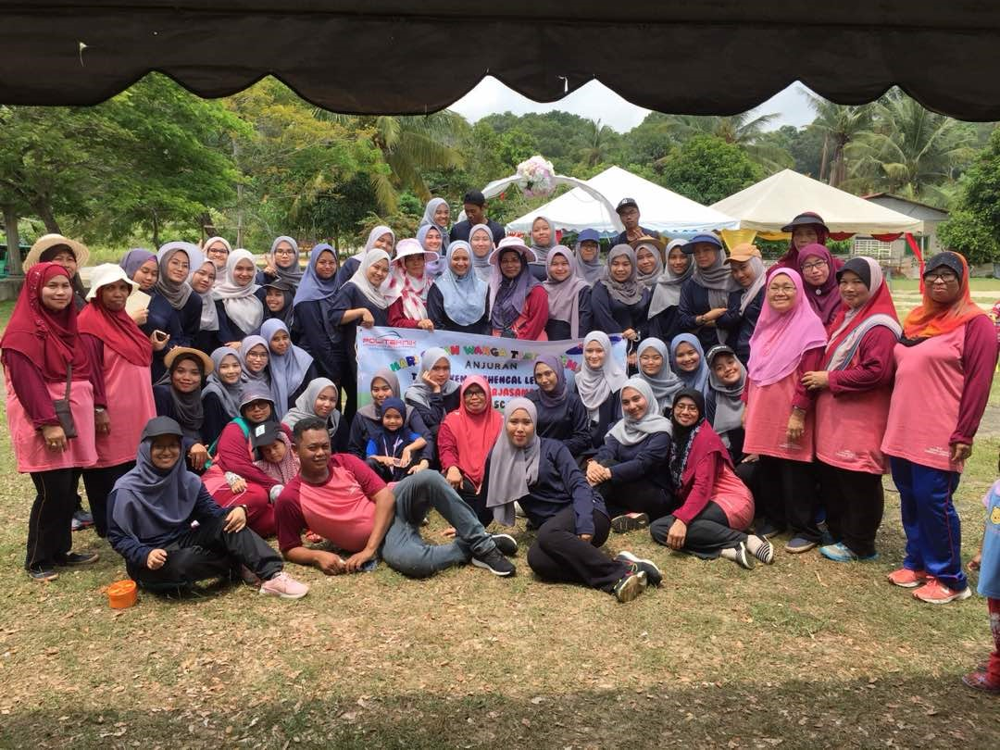
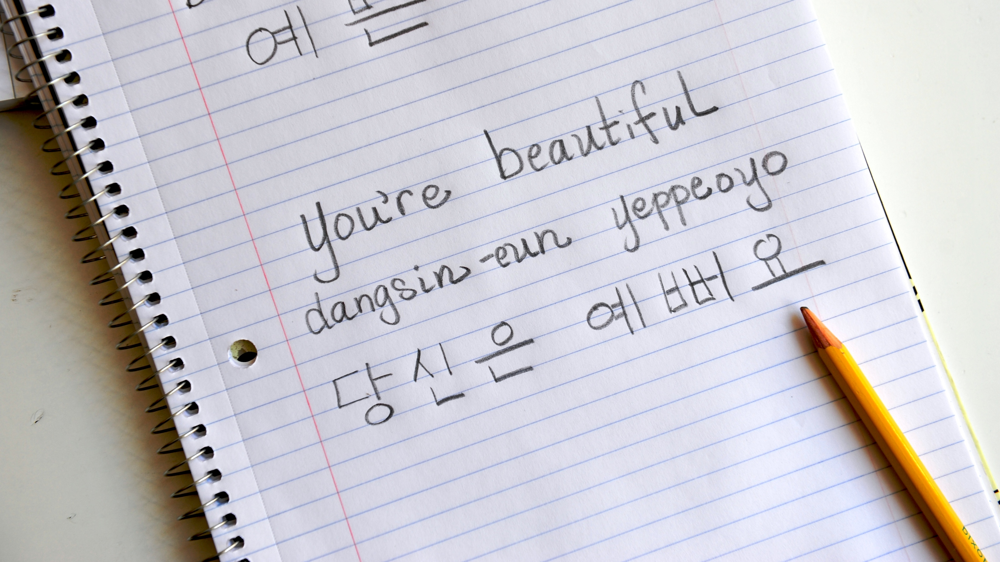

HOMEPAGE
BIODATA
FAMILY
EDUCATION
EXPERIENCE
GALLERY
SOCIAL MEDIA
HOMEPAGE
BIODATA
FAMILY
EDUCATION
EXPERIENCE
GALLERY
SOCIAL MEDIA
My Own Sweet Self

Name: Siti Nur Aqilah Binti Roslan
Date Of Birth: 12 April 1998
Age: 22 Years Old
Nickname: Qilah
Height: 158 cm
Status: Single
Hobbies: Surfing Internet
Favourite Color: Black and Palatte Color
Birthplace: Hospital Universiti Sains Malaysia (HUSM), Kelantan
Address: Lot 1244, Kg. Jerat Semata, 16800 Pasir Puteh, Kelantan
My Key Features
- Fast Speed Typing
- Good Work In Team
- Able to write and converse in basic Korean
Fast Speed Typing
My first key feature is that I can speed typing because I learn subject Keyboarding Skills in my Diploma at Politeknik Sultan Ahmad Shah (POLISAS). I also join Computer Application Program at POLISAS and I get Speed Typing at 42psm. We need to frequently practice in Speed typing, so that we can be fast in typing. You can try check you speed typing at the button below.
Good Work In Team

My second feature is good work in team. From the picture above is the picture of when I'm doing Diploma at POLISAS and my class hold a programme which is Program Sukaneka Tabika Kemas Chengal Lempong for subject Event Organization. I like to work in group or team which can make the tasks easier to be done. I also like to communicate and know on how to solve problems if there is problem in doing the tasks.
Able to write and converse in basic Korean

My last feature is I able to write and converse in basic Korean. I have a lot of interest in Korea language so I decide to learn Korean on my own because it's costly to take a Korean class. I learn Korean language through internet website, watching Korean Drama and also listening to Korean songs. This below button probably can be a help for you to learn Korean effectively.